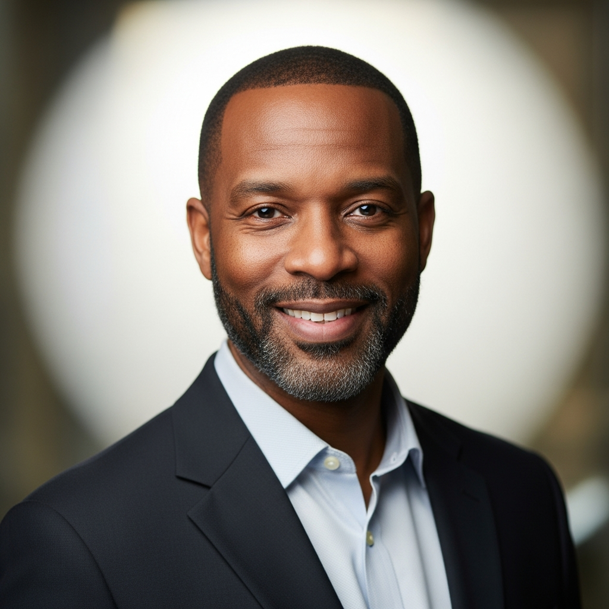

Umeh kosisochukwu
Founder & CEO
Umeh spent 15 years at the FAO studying smallholder agriculture in West Africa before founding VitaSynora. His doctoral research at Wageningen University focused on the economics of technology adoption in subsistence farming — the same problem VitaSynora is built to solve. He has advised the governments of Ghana, Rwanda, and Burkina Faso on food security policy and has published 23 peer-reviewed papers on precision agriculture in developing markets.
He founded VitaSynora with the conviction that AI must serve the farmer who grows food for the world's most food-insecure populations — not just the industrialized farms of the Global North.

Kofi Mensah
Chief Technology Officer
Kofi led machine learning infrastructure teams at Google Brain for 6 years before returning to West Africa to work on problems closer to his childhood experience of food insecurity in Accra. At Google, he specialized in deploying large-scale models to edge devices in low-connectivity environments — a challenge he now applies to VitaSynora's offline-first architecture.
He holds an MSc in Computer Science from Kwame Nkrumah University of Science and Technology and has contributed to open-source ML tooling used by hundreds of thousands of developers. His conviction: AI should work as well in a field outside Nairobi as it does in a data center in Silicon Valley.